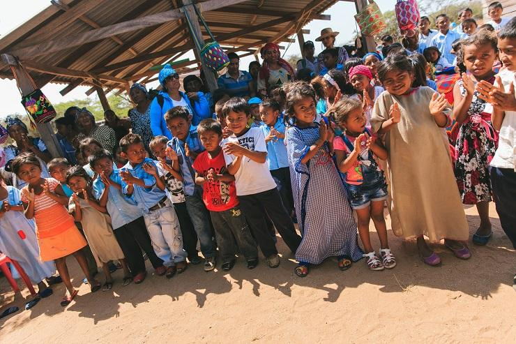
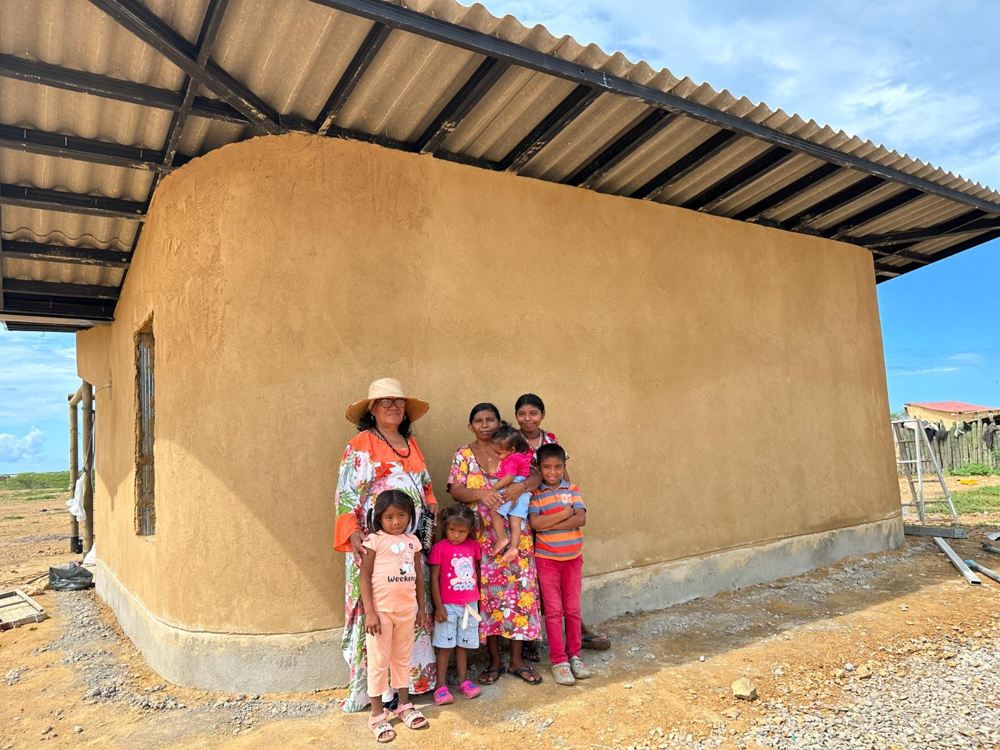

ENTIENDE EL GAS NATURAL QUE USAS EN TU HOGAR.
Aprende cómo funciona el gas natural en tu hogar, cómo controlar mejor tu consumo y cuáles son las prácticas esenciales para utilizarlo de forma responsable y segura.
COMENZAR A APRENDER →
¿QUÉ ES EL
GAS NATURAL?
Es una fuente de energía utilizada en los hogares para actividades como cocinar y calentar agua. Conocer cómo funciona el servicio ayuda a utilizarlo de manera más consciente y responsable.
El gas natural es transportado mediante una red de tuberías hasta llegar a las instalaciones de los usuarios.
En el hogar, el sistema permite llevar el gas hacia los equipos que lo utilizan, mientras el medidor registra el consumo realizado.
TU CONSUMO
CUENTA UNA HISTORIA.
El medidor registra la cantidad de gas natural utilizada en el hogar. Observar el consumo te ayuda a reconocer tus hábitos y utilizar el servicio de forma más consciente.
Es la unidad utilizada para expresar el volumen de gas consumido. La lectura del medidor permite observar cómo cambia el consumo con el tiempo.
Comparar tus hábitos de uso puede ayudarte a identificar cambios importantes en el consumo.


GASES EDUCA
EN LA GUAJIRA.
La información clara también hace parte del uso responsable del gas natural.
Este espacio busca acercar conocimientos sencillos a los hogares y comunidades de La Guajira para comprender mejor el consumo, reconocer buenas prácticas y fortalecer la seguridad en casa.
¿PERCIBES
OLOR A GAS?
Ante una posible fuga de gas es importante actuar con precaución y evitar cualquier situación que pueda generar una chispa o una llama.
FUEGO O GENERAR
CHISPAS.
Abre puertas y ventanas para permitir la circulación del aire.
No enciendas ni apagues interruptores o equipos eléctricos en el lugar.
Si la situación representa un riesgo, sal del lugar y busca orientación mediante los canales correspondientes.
La prevención comienza prestando atención al estado de las instalaciones, la ventilación y el correcto funcionamiento de los equipos que utilizan gas natural.